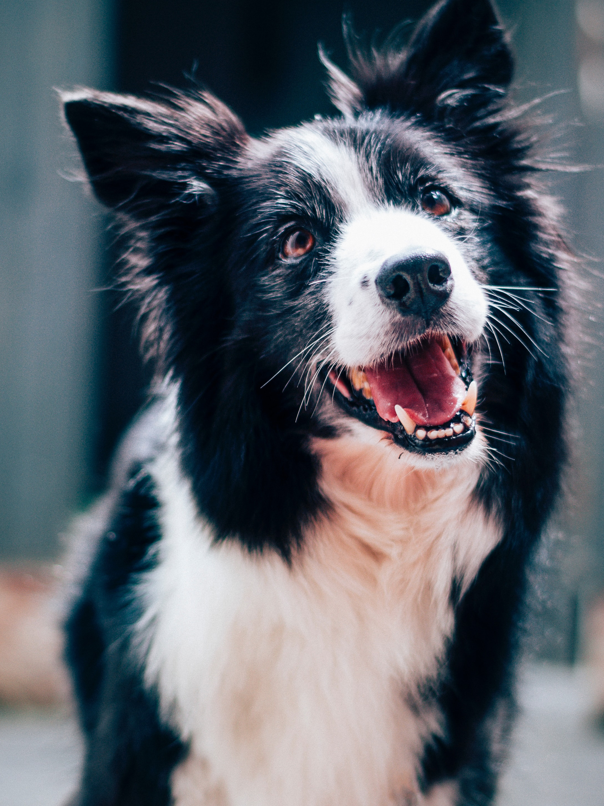

Remi
Introducing Remi: Your Energetic and Intelligent Companion!
Meet Remi, a charming 9-month-old purebred Border Collie with boundless energy and a brilliant mind. Remi's previous owners, while well-intentioned, discovered that his energy was a bit too much for them, as they may not have fully realized the energy levels of a Border Collie when they first brought him home. However, his enthusiasm and intelligence make him an incredible companion for the right family.
Remi is a smart boy who's always eager to learn and show off his repertoire of tricks. His agility and quick thinking will astound you as he effortlessly follows your commands. Whether it's fetching a ball, performing dazzling tricks, or learning new skills, Remi is up for the challenge, and he thrives on mental stimulation.
While Remi is undeniably energetic, he understands the value of balance. He can be the life of the party during playtime, but once he's had his fill of fun activities, he knows how to unwind and enjoy some downtime. Remi is the type of dog who can happily relax with you after a day of adventure, snuggled up on the couch, content in your company.
If you're an active family looking for an intelligent and devoted canine companion to keep up with your adventures, Remi is the perfect match. He's ready to be your loyal sidekick, challenging your mind and making every day an exciting journey. Don't miss the opportunity to bring Remi into your life, where his energy and intelligence will be cherished and nurtured. Adopt Remi today and embark on a lifetime of companionship filled with fun, learning, and love.